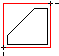

|
GetBoundingBox Method |
Gets two points of a box enclosing the specified object.
Signature
object.GetBoundingBox MinPoint, MaxPoint
Object
All Drawing Objects, AttributeReference
The object this method applies to.
MinPoint
Variant (three-element array of doubles); output-only
The 3D WCS coordinates specifying the minimum point of the object's bounding box.
MaxPoint
Variant (three-element array of doubles); output-only
The 3D WCS coordinates specifying the maximum point of the object's bounding box.
Remarks
The corners are returned in WCS coordinates with the box edges parallel to the WCS X, Y, and Z axes.
 |
MaxPoint |
MinPoint |
| Comments? |